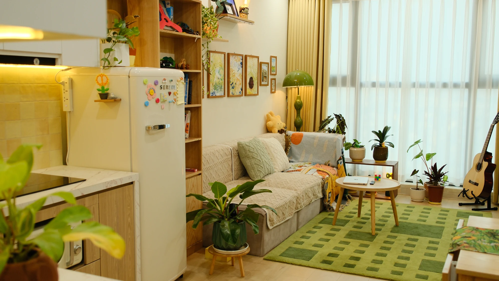
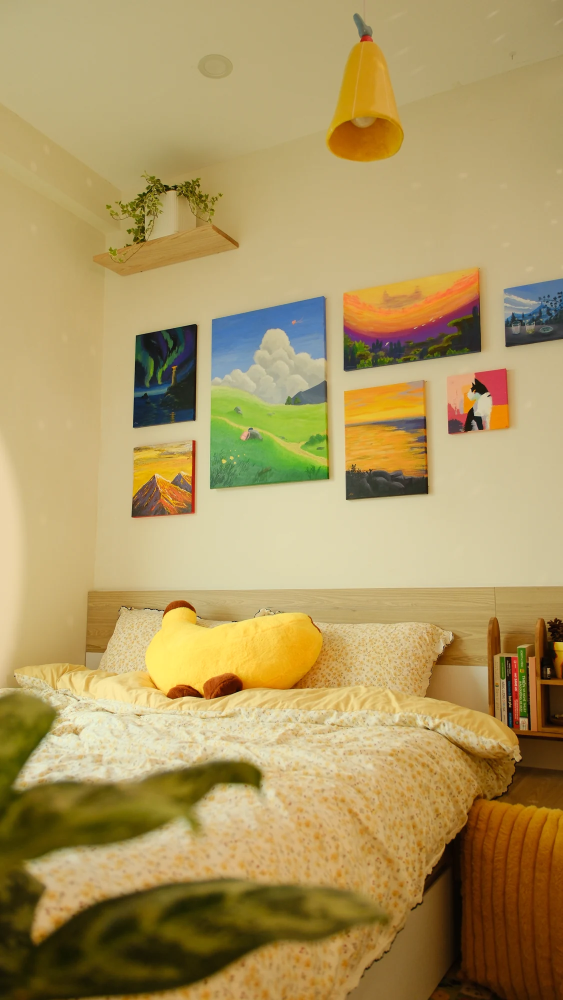
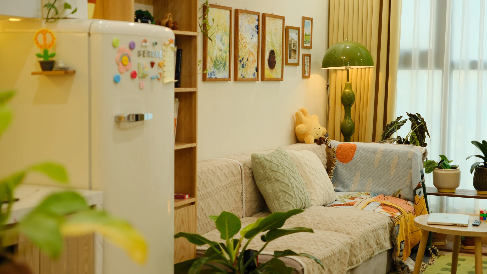

02 / TIME
02 / TIMETHUÊ THEO GIỜ · HÀ NỘI
A LITTLE GUIDE TO BEING TOGETHER
Tìm hiểu DearSunday tại Triều Khúc, Thanh Xuân, Hà Nội qua ảnh phòng, thông tin khung lưu trú và những điều nên xác nhận trước khi đặt. Cẩm nang cũng gợi ý cách chọn thời gian và hoạt động cho hai người. Khám phá DearSunday tại Triều Khúc.

A SLOWER KIND OF DATE ↗Chọn thời gian. Cất điện thoại. Làm điều gì đó cùng nhau.
✳THE JOURNAL · 06 BÀI
Ý tưởng hẹn hò và thông tin thực tế về khung giờ tại DearSunday, Triều Khúc.

GUIDE 01 · STAYHOMESTAY · THANH XUÂN
Tìm hiểu khu vực DearSunday, sức chứa và những thông tin nên xác nhận trước khi đặt homestay Thanh Xuân.
Đọc bài viết →02 / TIMETHUÊ THEO GIỜ · HÀ NỘI
 03 / MAKE
03 / MAKEÝ TƯỞNG HẸN HÒ · CÙNG LÀM
 04 / DAYLIGHT
04 / DAYLIGHTKHUNG BAN NGÀY · 8 TIẾNG

05 / OVERNIGHTQUA ĐÊM · DÀNH CHO HAI
 06 / CHECKLIST
06 / CHECKLISTCHECKLIST · TRƯỚC KHI ĐẶT
A NOTE FROM DEARSUNDAY
DearSunday là private homestay cho 1–2 người ở khu vực Triều Khúc, Thanh Xuân. Địa chỉ chi tiết được gửi riêng sau khi đặt. Khung giờ và lịch còn trống cần được xác nhận trực tiếp qua Page.
Tìm hiểu về DearSunday →